Embarque em uma jornada épica através do tempo e espaço com "Doctor Who". Este conto fascinante segue o Doutor, um viajante do tempo com uma nave peculiar, o TARDIS. Ao lado de seus corajosos companheiros, o Doutor enfrenta ameaças intergalácticas, desvenda mistérios cósmicos e desafia o próprio tecido da realidade. Prepare-se para uma experiência única, onde cada episódio é uma aventura emocionante e imprevisível. O universo aguarda a sua descoberta – você está pronto para viajar com o Doutor!
-
O Doutor (The Doctor)
Descrição: O protagonista da série, conhecido apenas como "O Doutor". É um Senhor do Tempo, uma raça alienígena avançada, e viaja na sua nave espacial chamada TARDIS, que se assemelha a uma cabine telefônica azul.
Características: O Doutor tem a habilidade de se regenerar, o que permite que diferentes atores interpretem o papel ao longo dos anos. Cada encarnação tem sua própria personalidade única.
-
Companheiros do Doutor
Descrição: Ao longo das temporadas, o Doutor é acompanhado por diferentes personagens humanos e não humanos, conhecidos como "companheiros". Eles viajam na TARDIS e auxiliam o Doutor em suas aventuras.
Exemplos: Rose Tyler, Martha Jones, Donna Noble, Amy Pond, Rory Williams, Clara Oswald, Bill Potts.
-
Mestra (The Master)
Descrição: Um dos principais antagonistas do Doutor, a Mestra é uma Senhora do Tempo, e também possui a habilidade de se regenerar. Ela muitas vezes assume uma postura antagônica em relação ao Doutor, mas há uma complexa relação entre os dois.
Características: Inteligente, manipuladora e muitas vezes imprevisível.
-
Daleks
Descrição: Uma raça de alienígenas geneticamente modificados e militarizados, conhecidos por seus exoesqueletos metálicos e vozes distintas. Eles são inimigos recorrentes do Doutor.
Características: Movidos pelo desejo de conquista e exterminação de outras raças.
-
River Song
Descrição: Arqueóloga com uma história complicada com o Doutor. Sua linha do tempo é apresentada de maneira não linear, o que adiciona um toque intrigante à sua relação com o Doutor.
-
Capitão Jack Harkness
Descrição: Um ex-militar do século 51 que torna-se imortal após um encontro com o Doutor. Ele se torna um aliado do Doutor e também lidera a Torchwood, uma organização dedicada a lidar com ameaças alienígenas na Terra.
Este é apenas um guia básico, e "Doctor Who" tem uma vasta galeria de personagens secundários e recorrentes que contribuem para a riqueza e complexidade da série. Que é conhecida por sua habilidade de reinventar-se ao longo do tempo
Descubra qual doutor você é!
-
Você é o Primeiro Doutor
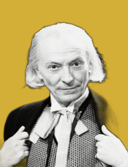 -
Você é o Segundo Doutor
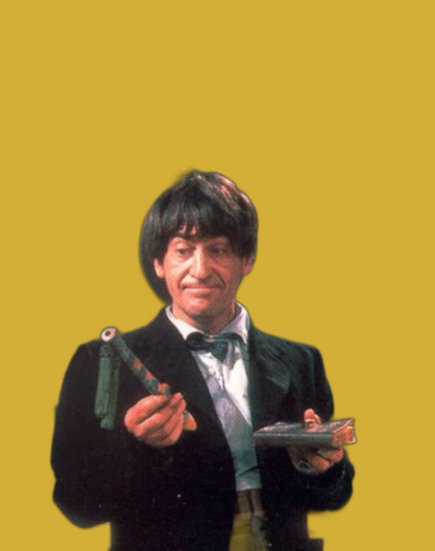 -
Você é o Terceiro Doutor
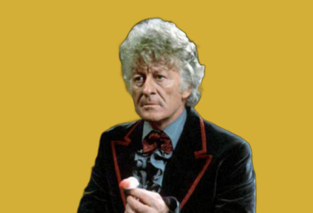 -
Você é o Quarto Doutor
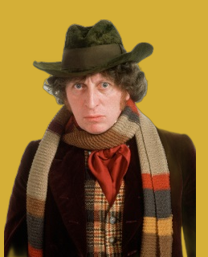 -
Você é o Quinto Doutor
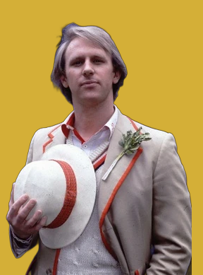 -
Você é o Sexto Doutor
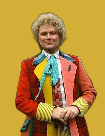 -
Você é o Sétimo Doutor
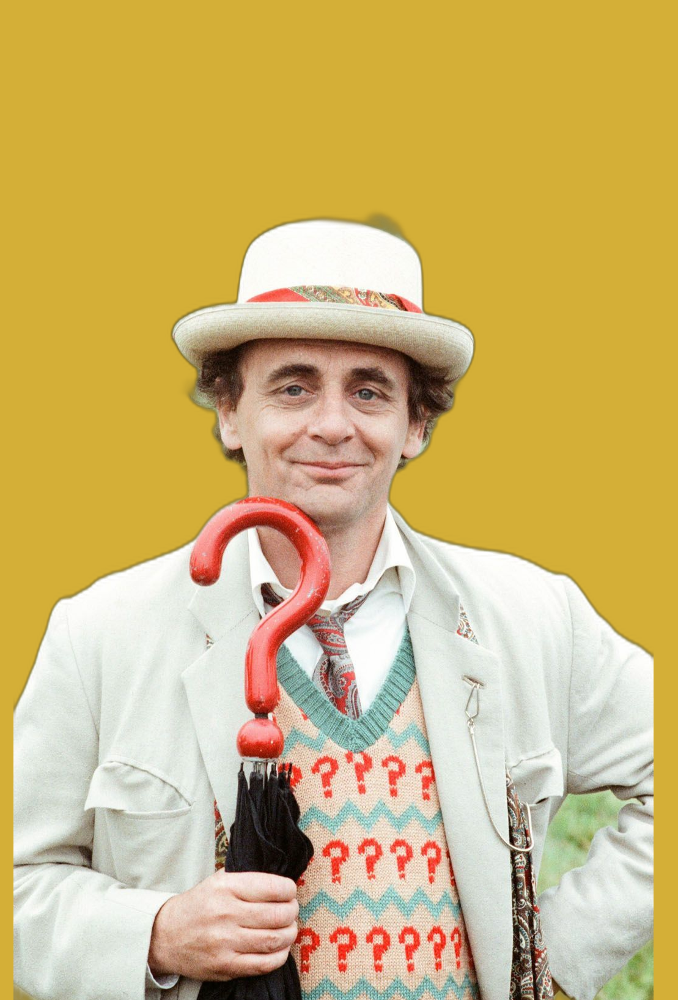 -
Você é o Oitavo Doutor
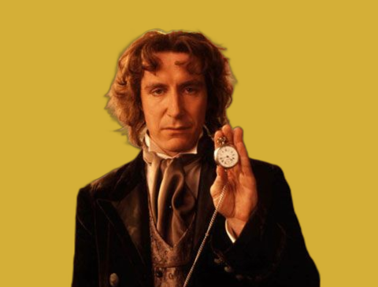 -
Você é o Nono Doutor
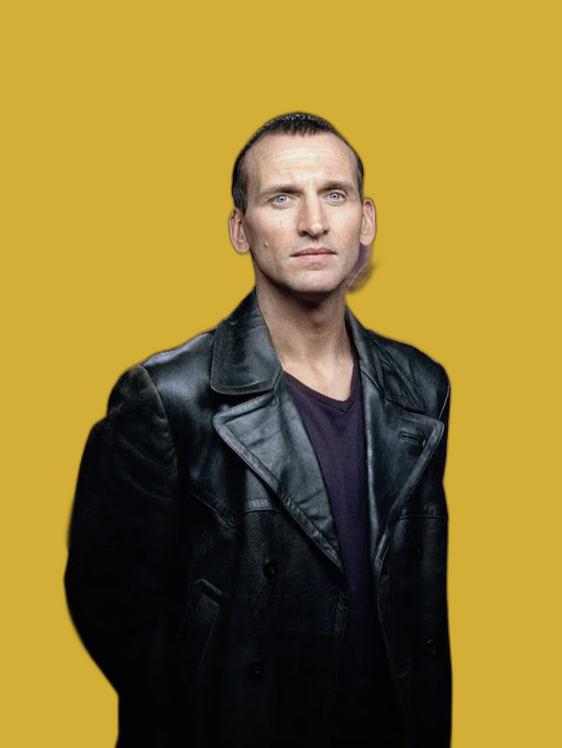 -
Você é o Décimo Doutor
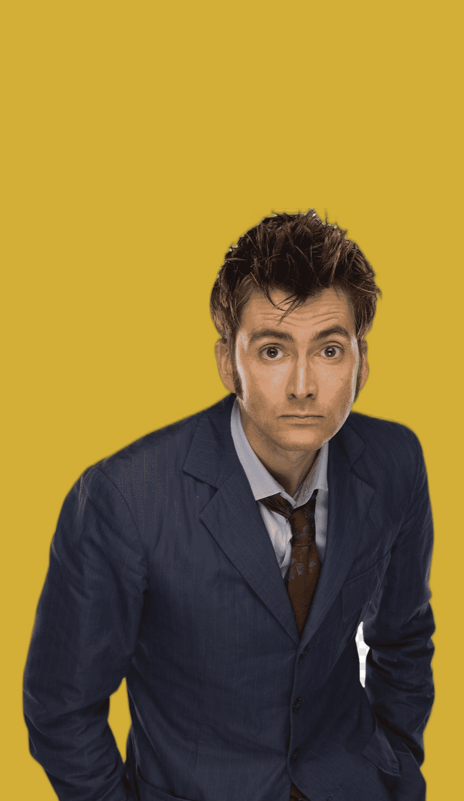 -
Você é o Décimo Primeiro Doutor
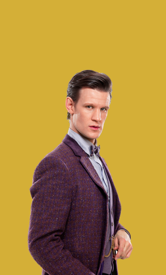 -
Você é o Décimo Segundo Doutor
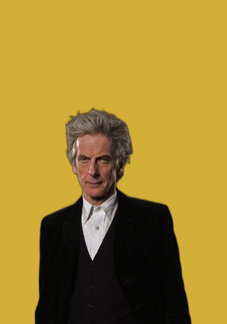 -
Você é a Décima Terceira Doutora
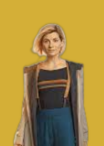 -
Você é o Décimo Quinto Doutor
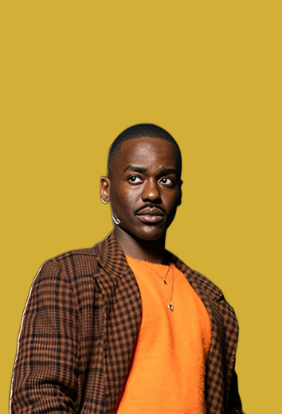